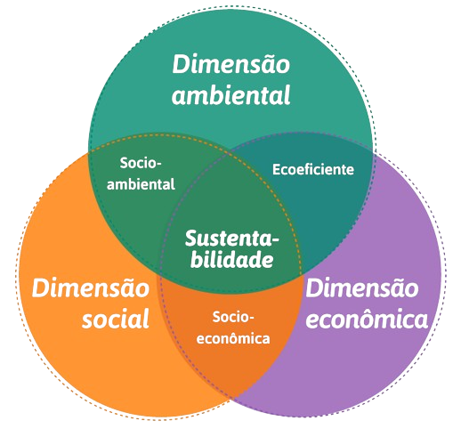

Sustentabilidade: um futuro melhor para todos
Sustentabilidade é mais do que uma necessidade atual; é a chave para um futuro próspero e equitativo para toda a humanidade. Ao adotarmos práticas sustentáveis, não apenas conservamos os recursos naturais essenciais para as gerações futuras, mas também promovemos um ambiente saudável e resiliente para todos os seres vivos. Investir em tecnologias verdes, reduzir o desperdício e promover a justiça social são pilares fundamentais para construir uma sociedade onde todos possam prosperar sem comprometer o planeta. Juntos, podemos criar um mundo onde a sustentabilidade não seja apenas uma meta, mas uma realidade que beneficie cada indivíduo e fortaleça as comunidades globalmente
QuizComo podemos contribuir para a sustentabilidade?
Existem muitas maneiras de contribuir para a sustentabilidade, desde mudanças simples em nosso dia a dia até ações mais significativas.
Reduzir o consumo de plásticos:
optando por sacolas reutilizáveis, garrafas de água e recipientes reutilizáveis, preferindo produtos a granel e com embalagens sustentáveis, trocando utensílios descartáveis por reutilizáveis, escolhendo produtos de higiene pessoal sem plástico, reciclando corretamente, educando-nos e aos outros sobre os impactos ambientais do plástico, e apoiando iniciativas de redução de plásticos.Economizar energia:
Desligar luzes e aparelhos eletrônicos quando não estiverem em uso, utilizar lâmpadas LED e escolher eletrodomésticos com eficiência energética.Utilizar transporte sustentável:
Optar por transporte público, carona compartilhada, bicicleta ou caminhadas sempre que possível, reduzindo a emissão de gases poluentes.Comprar produtos locais e sazonais:
Apoiar agricultores locais ao comprar alimentos produzidos localmente, reduzindo a pegada de carbono associada ao transporte de alimentos.Praticar a compostagem:
Reduzir a quantidade de resíduos enviados para aterros sanitários através da compostagem de resíduos orgânicos, que podem ser utilizados como fertilizantes naturais.Reduzir o desperdício de água:
Adotar práticas conscientes de uso da água, como consertar vazamentos, tomar banhos mais curtos e utilizar sistemas de captação de água da chuva.Optar por produtos sustentáveis:
Escolher produtos feitos com materiais reciclados ou biodegradáveis, apoiar empresas que adotam práticas sustentáveis em suas cadeias de produção.Promover a educação ambiental:
Participar e apoiar iniciativas locais de educação ambiental, conscientizando outras pessoas sobre a importância da sustentabilidade.Reduzir o consumo excessivo:
Praticar o consumo consciente, comprando apenas o necessário e evitando produtos descartáveis de uso único.Participar de iniciativas locais:
Engajar-se em voluntariado ambiental, participar de mutirões de limpeza de praias, parques e áreas naturais, e apoiar políticas públicas que promovam práticas sustentáveis.
Para mais informações sobre sustentabilidade e como você pode fazer a diferença, entre em contato conosco.
Junte-se a nós para construir um futuro mais sustentável para todos!
Os três pilares da sustentabilidade
|
Eles são fundamentais para garantir um desenvolvimento equilibrado e duradouro. O primeiro pilar, o ambiental, foca na preservação dos recursos naturais, na redução da poluição e na conservação da biodiversidade. O segundo pilar, o econômico, busca promover o crescimento econômico de forma responsável, considerando os impactos sociais e ambientais das atividades produtivas. Por fim, o pilar social visa garantir a justiça social, promovendo igualdade de oportunidades, acesso a serviços básicos e respeito aos direitos humanos, tudo isso dentro de um contexto sustentável que equilibra as necessidades presentes sem comprometer as futuras gerações. Esses três pilares interagem de maneira complexa e interdependente, sendo essencial promover políticas e práticas que fortaleçam cada um deles para alcançar um desenvolvimento verdadeiramente sustentável. |
 |
Fale conosco
Quer saber mais sobre como podemos trabalhar juntos para criar um futuro mais sustentável?